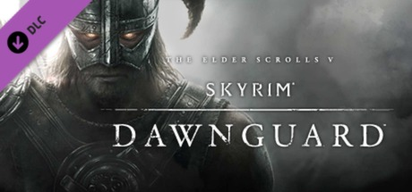
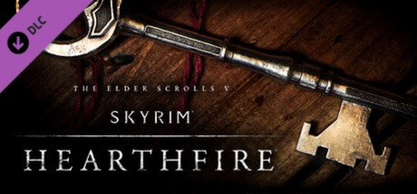
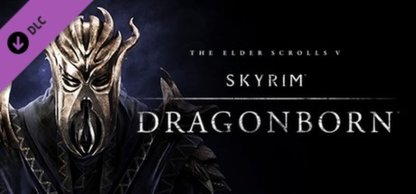

Dawnguard
Adiciona uma campanha sobre o conflito entre os caçadores de vampiros da Guarda da Aurora e o clã Volkihar. Você pode se tornar um Lorde Vampiro ou lutar pela ordem, além de encontrar novas armas, áreas e feitiços.
Três expansões que adicionam histórias, lugares, possibilidades e novas formas de viver a aventura.

Adiciona uma campanha sobre o conflito entre os caçadores de vampiros da Guarda da Aurora e o clã Volkihar. Você pode se tornar um Lorde Vampiro ou lutar pela ordem, além de encontrar novas armas, áreas e feitiços.

Foca na construção de lares. Você pode comprar terrenos, projetar e construir sua própria casa, adotar crianças e criar uma vida doméstica dentro do jogo.

Leva o jogador até a ilha de Solstheim para enfrentar o primeiro Dragonborn. A expansão adiciona novas armaduras, armas, Gritos e a habilidade de cavalgar dragões.